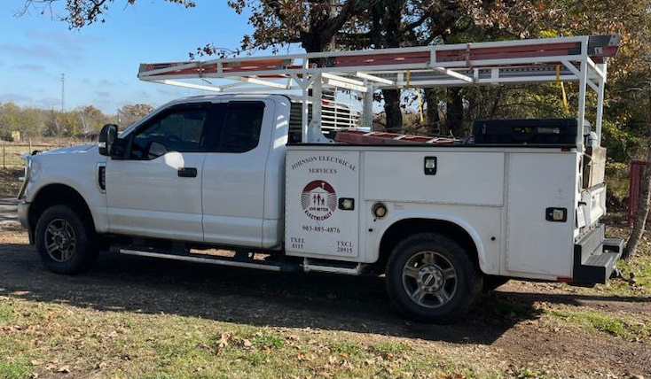

Johnson Electrical Services
903-885-4876 💡 Sulphur Springs Electrician 🔌 over 35 years of experience

⚡ Electrical Installations and Repairs
Are you looking for exceptional electrical services? Look no further! Johnson Electrical Services provides comprehensive residential and commercial electrical services. From troubleshooting and rewiring to ceiling fan & fixture installations and more, we do it all and we do it right.
You’ll receive a 1-year warranty on labor and all materials provided by us. Contact our troubleshooting specialists today! When you call us, don’t hesitate to ask about our senior and veteran DISCOUNTS.
We learn something new every day and consider it as an ongoing learning experience. We return calls and emails on the same day or the next day. Call us today to learn more.
Our Wide Range of Electrical Services include:
- Installation
- Electrical Repair
- Rewiring
- Ceiling Fans
- Lighting Fixtures
- LED Upgrading
- Troubleshooting
- Add-ons
The time taken to complete each project varies. However, have peace of mind knowing that we complete all jobs efficiently and meticulously.
Need to get your home rewired? Call us today!
(903) 885-4876
Turn to Johnson Electrical Services for your residential and commercial electrical service needs. We are the best when it comes to electrical troubleshooting! Our professional electricians have 35 years of experience in this field. Licensed in 1985 and founded in 1992.
Family owned and operated, Johnson Electrical Services provides electrical services to the Sulphur Springs, TX / Hopkins County area.
Payment Types
- Cash
- Check


Repent and be baptized, every one of you, in the name of Jesus Christ for the forgiveness of your sins. And you will receive the gift of the Holy Spirit.
Rejoice in the Lord always. I will say it again: Rejoice!